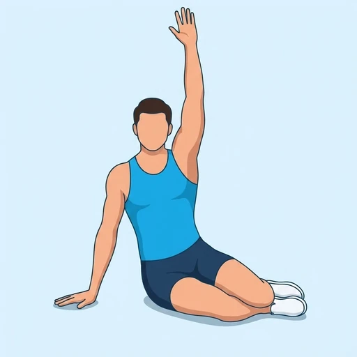

Pilates Side Bend
A lateral trunk exercise from a side-supported position: the hips lift and the top arm reaches overhead, bending the body sideways over the supporting arm.
Core · Bodyweight · Intermediate


Muscles worked by the Pilates Side Bend
Primary
Secondary
Also called: glute med, gluteus medius, side glute, hip abductor glute, oblique, obliques.
Equipment
No equipment — this is a bodyweight exercise.
How to do the Pilates Side Bend
- Sit on one hip with the legs bent to the side and the supporting hand on the floor under the shoulder.
- Press into the hand and the lower leg to lift the hips off the floor.
- Reach the top arm overhead so the body forms a long arc from the hand to the feet.
- Lower the hips under control back towards the mat.
- Complete the repetitions and change sides.
Form tips
- Push the floor away so the supporting shoulder stays stacked and stable.
- Reach the top arm long rather than collapsing sideways.
- Keep the movement smooth; the lift and the lower take the same time.
At a glance
| Body part | Core |
|---|---|
| Category | Strength |
| Force type | Dynamic |
| Mechanic | Compound |
| Difficulty | Intermediate |
| Equipment | Bodyweight |
| Goals | Endurance, Strength |
| Tags | Core, Calisthenics |
| MET | 5.0 (metabolic equivalent, for calorie estimates) |
| Unilateral | Yes |
| Bodyweight | Yes |
| Dataset id | pilates-side-bend |
Pilates Side Bend in German & Spanish
| German | Pilates Seitbeuge |
|---|---|
| Spanish | Flexión Lateral de Pilates |
Descriptions, instructions and tips ship in all three languages in the JSON.
Related exercises
Exercise data (JSON)
The record below is exactly what exercises.json ships for this exercise — names, descriptions, instructions and tips in English, German and Spanish.
{
"id": "pilates-side-bend",
"name_en": "Pilates Side Bend",
"name_de": "Pilates Seitbeuge",
"name_es": "Flexión Lateral de Pilates",
"description_en": "A lateral trunk exercise from a side-supported position: the hips lift and the top arm reaches overhead, bending the body sideways over the supporting arm.",
"description_de": "Eine seitliche Rumpfübung aus der seitlich gestützten Position: die Hüfte hebt, der obere Arm streckt sich über den Kopf und der Körper beugt sich seitlich über den Stützarm.",
"description_es": "Un ejercicio lateral del tronco desde un apoyo de costado: las caderas se elevan y el brazo de arriba se estira por encima de la cabeza, curvando el cuerpo de lado sobre el brazo de apoyo.",
"category": "strength",
"force_type": "dynamic",
"mechanic": "compound",
"difficulty": "intermediate",
"body_part": "core",
"primary_muscles": [
"gluteus_medius",
"obliques"
],
"secondary_muscles": [
"anterior_deltoid",
"transverse_abdominis"
],
"goals": [
"endurance",
"strength"
],
"tags": [
"core",
"calisthenics"
],
"is_unilateral": true,
"is_bodyweight": true,
"instructions_en": [
"Sit on one hip with the legs bent to the side and the supporting hand on the floor under the shoulder.",
"Press into the hand and the lower leg to lift the hips off the floor.",
"Reach the top arm overhead so the body forms a long arc from the hand to the feet.",
"Lower the hips under control back towards the mat.",
"Complete the repetitions and change sides."
],
"instructions_de": [
"Setz dich auf eine Hüfte, die Beine zur Seite gebeugt, die Stützhand unter der Schulter am Boden.",
"Druck über Hand und unteres Bein und heb die Hüfte vom Boden.",
"Streck den oberen Arm über den Kopf, sodass der Körper einen langen Bogen von der Hand bis zu den Füßen bildet.",
"Senk die Hüfte kontrolliert Richtung Matte.",
"Beende die Wiederholungen und wechsle die Seite."
],
"instructions_es": [
"Siéntate sobre una cadera con las piernas dobladas hacia un lado y la mano de apoyo en el suelo bajo el hombro.",
"Empuja con la mano y la pierna inferior para elevar las caderas del suelo.",
"Estira el brazo de arriba por encima de la cabeza para formar un arco largo desde la mano hasta los pies.",
"Baja las caderas de forma controlada hacia la colchoneta.",
"Completa las repeticiones y cambia de lado."
],
"tips_en": [
"Push the floor away so the supporting shoulder stays stacked and stable.",
"Reach the top arm long rather than collapsing sideways.",
"Keep the movement smooth; the lift and the lower take the same time."
],
"tips_de": [
"Druck den Boden weg, damit die Stützschulter stabil über der Hand bleibt.",
"Streck den oberen Arm lang, statt seitlich zusammenzusacken.",
"Halte die Bewegung flüssig: Heben und Senken dauern gleich lang."
],
"tips_es": [
"Empuja el suelo para que el hombro de apoyo quede estable y alineado.",
"Alarga el brazo de arriba en lugar de dejarte caer hacia el lado.",
"Mantén el movimiento fluido: subir y bajar duran lo mismo."
],
"met": 5.0,
"images": {
"flat": {
"start": "images/flat/pilates-side-bend-start.webp",
"peak": "images/flat/pilates-side-bend-peak.webp"
}
}
}Fetch just this exercise
const { exercises } = await fetch(
"https://exercise-dataset.com/exercises.json"
).then(r => r.json());
const ex = exercises.find(e => e.id === "pilates-side-bend");Free for personal and commercial in-app use with attribution (“Exercise data by RepDB”) — see the license and ready-made attribution snippets. Redistributing the data as a dataset or API is not permitted.